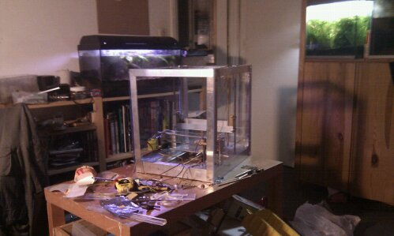
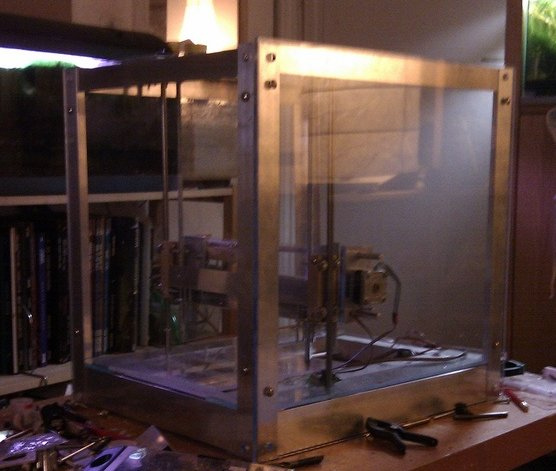
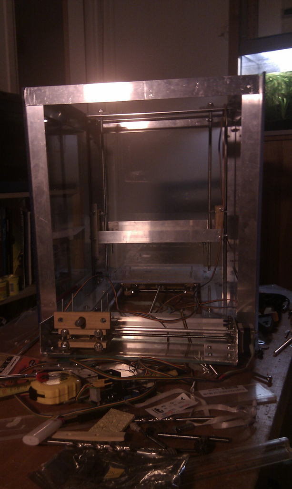
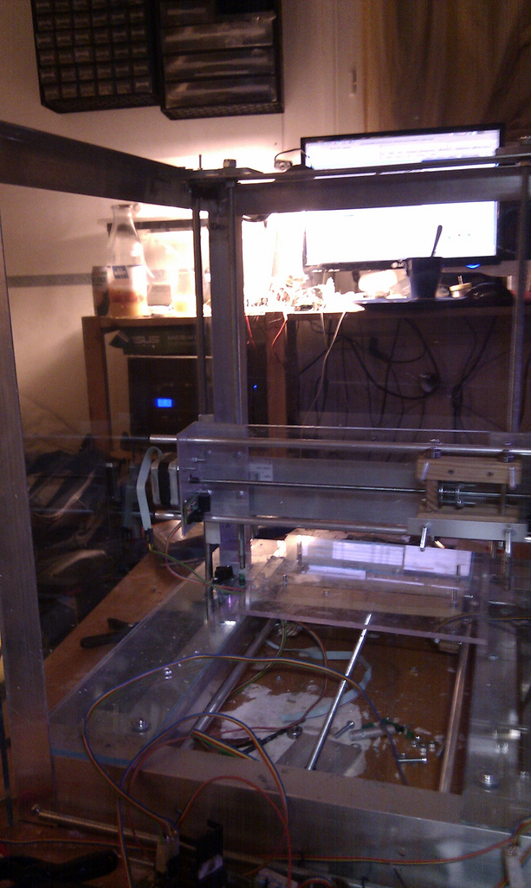

2010-07-01
Building a repstrap (3) box and cartesian robot almost done

Things are shaping up for the YARP project ! But also stepper motor mishaps, and other problems!
"On the bright side of life":
- finished cutting and test-mounting the acrylic side and back panels
- corrected some axis alignment problems ( mainly on the vertical axis, as usual)
- the opto end- stops and associated elements are in place for the most part.
- I have also chosen the type of plastic extruder (the part that actually "prints" the plastic): I will be building and settled for a pinch wheel design as it seems to be the easiest and usually simpler designs work best : see here for example for more information
On the less good side of things:
- Unfortunately, I also a big mishap with the vertical axis stepper motors : I didn't notice one of the threaded rods wa stuck and it seems to have damaged one of the steppers beyond repair (it emits a small vibration, but does not turn at ALL). To be honest I expected these to fail , as they were the least reliable and oldest ones I had, and hey you can only get so much out of 10 year old salvaged motors that had been sitting in a garage for years)
- the amount of tiny but oh so annoying adjustments is a mindbogling : its one of those days , when each time you correct a problem another one seems to pop up right away
- due to my exams and the insane heat we are having, i had to slow the construction down, also i am a bit stuck until i receive the replacement steppers



{kind=link}
{kind=link}
{kind=link}
{kind=link}